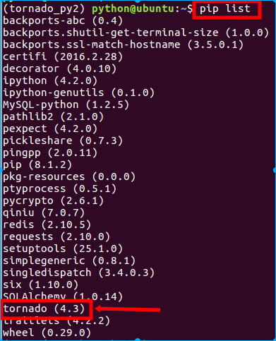

2.1 安装
自动安装
- 查看自己当前的环境是否已安装
$ pip list - 安装
$ pip install tornado
手动安装
- 下载安装包tornado-4.3.tar.gz（https://pypi.python.org/packages/source/t/tornado/tornado-4.3.tar.gz）
$ tar xvzf tornado-4.3.tar.gz $ cd tornado-4.3 $ python setup.py build $ sudo python setup.py install
关于使用平台的说明
Tornado should run on any Unix-like platform, although for the best performance and scalability only Linux (with epoll) and BSD (with kqueue) are recommended for production deployment (even though Mac OS X is derived from BSD and supports kqueue, its networking performance is generally poor so it is recommended only for development use). Tornado will also run on Windows, although this configuration is not officially supported and is recommended only for development use.
Tornado应该运行在类Unix平台，在线上部署时为了最佳的性能和扩展性，仅推荐Linux和BSD（因为充分利用Linux的epoll工具和BSD的kqueue工具，是Tornado不依靠多进程/多线程而达到高性能的原因）。
对于Mac OS X，虽然也是衍生自BSD并且支持kqueue，但是其网络性能通常不太给力，因此仅推荐用于开发。
对于Windows，Tornado官方没有提供配置支持，但是也可以运行起来，不过仅推荐在开发中使用。